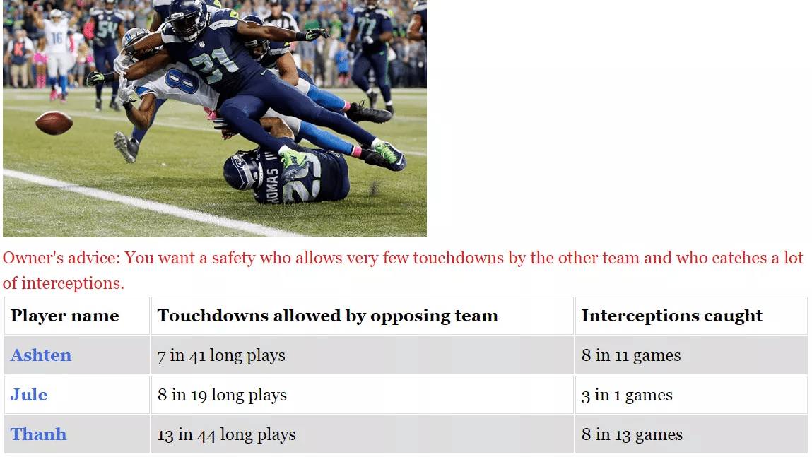

Rational Football League
Grades 6-8, 30-60min
In the Rational Football League, students recruit a fantasy team of football players based on randomly generated statistics presented as ratios. To understand which player to draft for each position, students leverage ratio and proportional reasoning to compare the three options, ultimately deciding which stat they deem more important. Once their team is complete, students compete in the RFL Championships, putting their six selections to the test to determine if they’d made the best choices or if their team would falter.
Topics addressed
- Ratio and proportional reasoning
- Football basics
- Primary CT concept: algorithmic thinking. The RFL is all about understanding how parameters can affect the outcome of an algorithm, which in this case means who wins the football game. If you input players with high stats in key areas, you’re more likely to win!
Students will be able to
- Apply ratio and proportional reasoning to a fantasy football draft
- Compare football stats presented as ratios and select the most qualified player
Materials
- Rational Football League app
-
Student worksheet (optional):


Prep
This activity assumes your students have already been taught how to compare ratios and proportions. It is a practice tool, not a teach-for-the-first-time tool.
Suggested lesson breakdown
This activity can work entirely hands off – the web app includes all necessary instructions to get students comfortable with drafting football players using ratios and proportions. You can also work together as a class through selecting a mascot, as every student will see the same options for that character alone, and the selection does not affect gameplay during the RFL Championship.
Common Core standards
-
CCSS.Math.Content.6.RP.A.1
Understand the concept of a ratio and use ratio language to describe a ratio relationship between two quantities. -
CCSS.Math.Content.6.RP.A.2
Understand the concept of a unit rate a/b associated with a ratio a:b with b ≠ 0, and use rate language in the context of a ratio relationship.
Interested in creating interactive stories like this? Check out Twine, the open-source tool used as a platform for this web app.